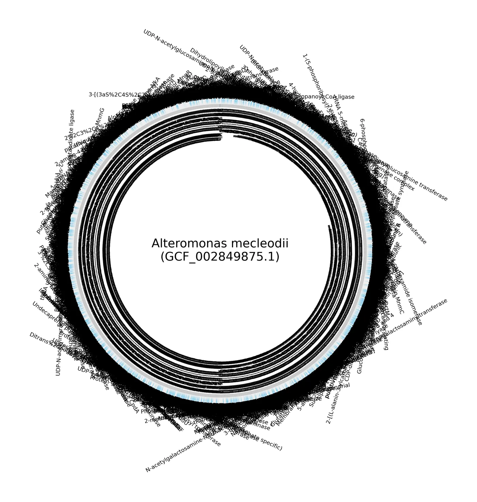

Project
Bacterial Genome Assembly Pipeline
A Nextflow pipeline that assembles and evaluates a complete Alteromonas macleodii genome from long and short reads.
Goal
Build a reproducible long-read assembly workflow, polish it with short reads, and measure quality against the RefSeq reference (BF528 course project).
Data and methods
Short reads get FastQC; long reads are filtered with Filtlong (minimum length 500, best 90% kept) and assembled with Flye. Bowtie2 and samtools align short reads to the assembly for Pilon polishing. Prokka annotates, BUSCO (alteromonas_odb12) checks completeness, and QUAST compares polished and unpolished assemblies with RefSeq GCF_000172635.2.
Code
process FLYE {
label 'process_single'
conda 'envs/flye_env.yml'
publishDir params.outdir, mode:'copy'
input:
tuple val(name),path(nano)
output:
path("assembly.fasta")
script:
"""
flye --nano-corr $nano -o .
Nextflow process: long-read assembly with Flye
Results


Tools
Links
A single 4.63 Mb contig with 99.6% BUSCO completeness; short-read polishing nudged QUAST mismatches from 18.33 to 18.18 per 100 kb.